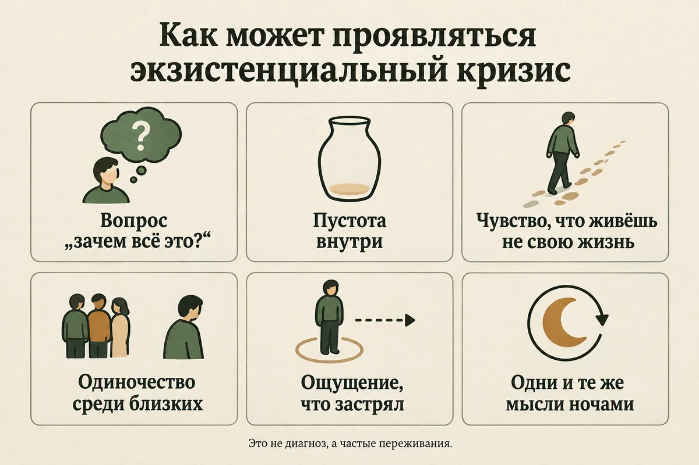
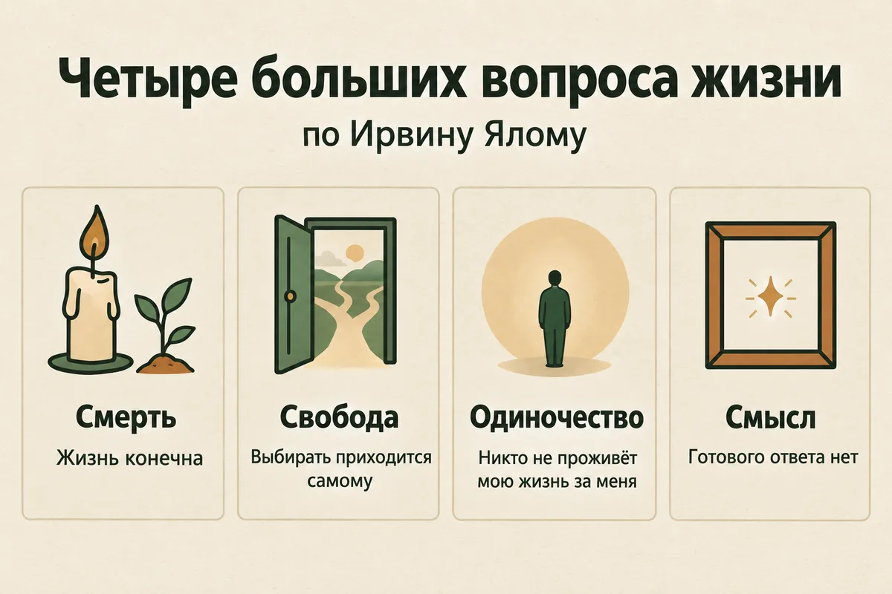
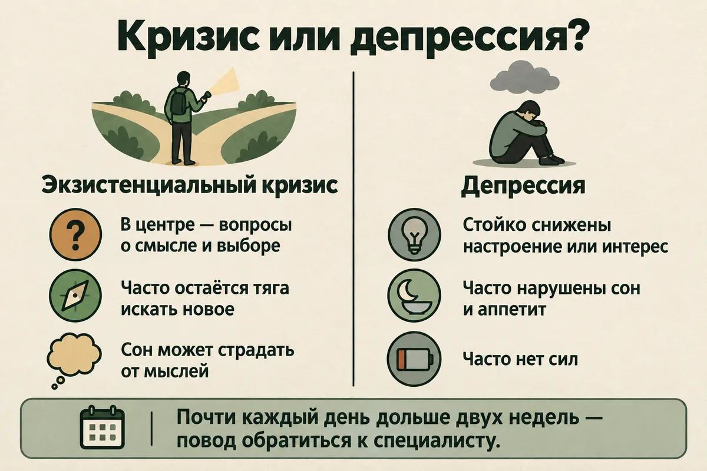
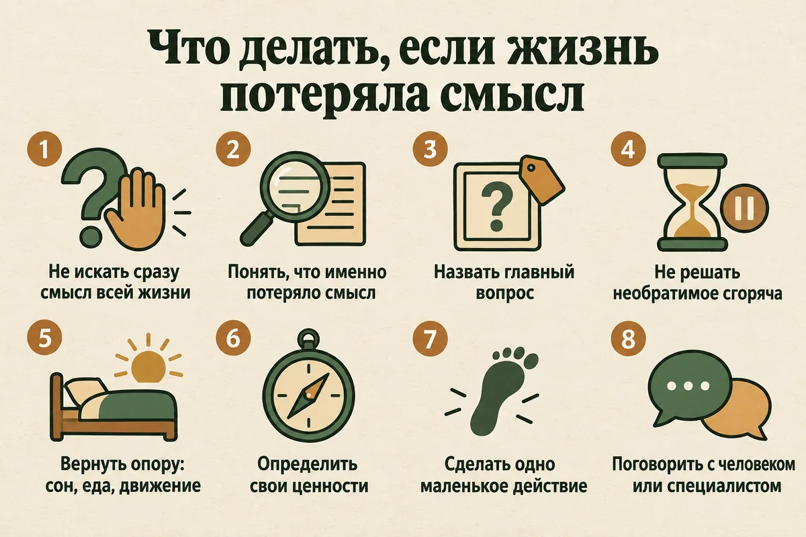
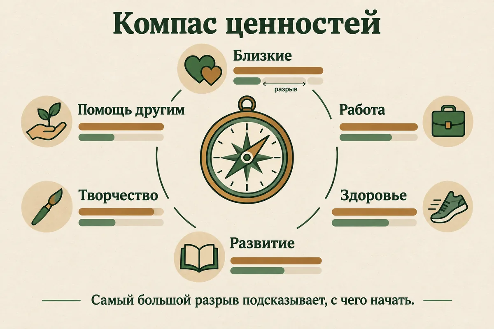
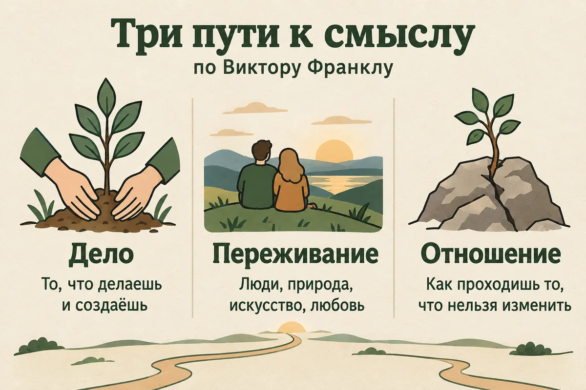

Главная → Блог → Экзистенциальный кризис
Экзистенциальный кризис: что это такое, признаки и как его пережить
Обновлено: 23.09.2026 · 17 минут чтения
Экзистенциальный кризис — это период, когда привычные ответы на главные вопросы перестают работать: зачем я живу, что для меня по-настоящему важно, как быть с тем, что жизнь конечна. Снаружи всё может идти как раньше — работа, семья, планы, — а изнутри жизнь вдруг кажется пустой, чужой или бессмысленной. Это не диагноз и не признак болезни: так называют переживание, через которое проходят очень многие, чаще всего на переломах жизни. Ниже — как его узнать, чем он отличается от депрессии, почему он случается и что помогает пройти его, а не просто переждать.
- Что такое экзистенциальный кризис простыми словами
- Признаки: как понять, что это он
- О чём этот кризис: четыре больших вопроса
- Почему он возникает
- В каком возрасте бывает
- Экзистенциальный кризис или депрессия
- Когда кажется, что жизнь потеряла смысл
- Сколько длится и чем заканчивается
- Что делать: 8 шагов
- Упражнение «Компас ценностей»
- Что не помогает
- Что помогает по данным исследований
- Если кризис у близкого
- Когда нужна помощь специалиста
- Частые вопросы
Что такое экзистенциальный кризис простыми словами
Экзистенциальный кризис — это когда рушится внутренняя опора, которая раньше держала жизнь без лишних вопросов. Слово «экзистенциальный» происходит от латинского existentia — существование: речь о кризисе не в отношениях, не на работе и не в здоровье, а в самом ощущении, зачем и как жить.
Большую часть времени у человека есть рабочий набор ответов: я учусь, чтобы получить профессию; работаю, чтобы обеспечить семью; расту, чтобы чего-то добиться. Эти ответы не обязательно сформулированы — они просто работают. Кризис начинается, когда они перестают убеждать. Профессия получена, а радости нет. Семья обеспечена, а внутри пусто. Цель достигнута, а следующая кажется бессмысленной. Или случается что-то, после чего старые ответы звучат наивно: умирает близкий, приходит диагноз, рушится дело, которому отдано десять лет.
Отдельной рубрики «экзистенциальный кризис» в Международной классификации болезней нет. Это понятие пришло из философии и психотерапии, а не из психиатрии, и само по себе не означает расстройства. Кризис может быть мучительным, но у него есть и другая сторона: многие люди, прошедшие через него, описывают его как момент, когда они впервые всерьёз спросили себя, чего хотят, и начали жить осознаннее.
Про психотерапевтов, писавших об этом, стоит знать два имени. Психиатр Виктор Франкл, прошедший нацистские концлагеря, описал «экзистенциальный вакуум» — чувство внутренней пустоты и бессмысленности — и создал логотерапию, подход, построенный вокруг поиска смысла. Его книга «Сказать жизни „Да!“. Психолог в концлагере» (в другом переводе — «Человек в поисках смысла») до сих пор одна из самых читаемых книг по психологии. Ирвин Ялом, американский психиатр и один из основателей экзистенциальной психотерапии, свёл большие вопросы жизни к четырём «данностям», о них — ниже.
Признаки: как понять, что это экзистенциальный кризис
Экзистенциальный кризис узнают не по одному симптому, а по сочетанию: мысли крутятся вокруг больших вопросов, привычная жизнь теряет вкус, и всё это держится не день-два, а недели. Вот что люди описывают чаще всего.
В мыслях
- навязчивое «зачем всё это?» — про работу, отношения, собственную жизнь в целом;
- ощущение, что живёшь не своей жизнью, по чужому сценарию;
- мысли о конечности: «жизнь пройдёт, а я так ничего и не понял»;
- сомнения во всём, что раньше казалось очевидным: в выборе профессии, партнёра, города, убеждений;
- сравнение себя с другими и с собой прежним — не в свою пользу.
В чувствах
- пустота, как будто из жизни вынули что-то главное;
- тревога без конкретного повода — «что-то не так, но непонятно что»;
- ощущение одиночества, даже среди близких: «никто не понимает, о чём я»;
- тоска по чему-то, чему трудно подобрать название;
- чувство застревания: вперёд не видно, назад нельзя.
В поведении
- привычные дела делаются на автомате, без интереса;
- долгое чтение философии, психологии, форумов в поисках ответа;
- резкие порывы всё поменять — уволиться, уехать, начать с нуля;
- уход от людей или, наоборот, погоня за впечатлениями, чтобы заглушить пустоту;
- бессонные ночи с теми же вопросами по кругу.

Одна важная деталь. Почти все эти признаки — боль, а не поломка. Способность спросить «зачем» и заметить, что жизнь идёт не туда, — человеческая, а не болезненная. Проблемой состояние становится тогда, когда вопросы перестают вести куда-либо и превращаются в замкнутый круг, а к пустоте добавляются признаки депрессии. Как их различить, разобрано ниже.
О чём этот кризис: четыре больших вопроса
Ирвин Ялом в книге «Экзистенциальная психотерапия» (1980) описал четыре «данности» — условия, с которыми сталкивается любой человек просто потому, что живёт. Экзистенциальный кризис почти всегда крутится вокруг одной или нескольких из них. Если понять, какая ваша, становится яснее, что с ней делать.
| Данность | Как звучит в кризисе | Что может помочь повернуть |
|---|---|---|
| Смерть | «Всё закончится, зачем тогда стараться» | Конечность как подсказка: что я перестану откладывать |
| Свобода | «Никто не скажет, как правильно, и всё решать мне» | Выбор как возможность, а не груз: маленькие решения по своим ценностям |
| Одиночество | «Меня никто до конца не поймёт» | Честные разговоры, в которых можно быть собой |
| Бессмысленность | «У жизни нет готового смысла» | Смысл, который создаётся делами, людьми и отношением к тому, что нельзя изменить |
Смерть. Знание, что жизнь конечна, есть у всех, но обычно оно фоновое. В кризисе оно выходит на первый план: после похорон, диагноза, круглой даты. Если страх смерти стал главным и мешает спать, подробнее об этом — в статье «Страх смерти: почему возникает и что делать».
Свобода. Звучит как что-то хорошее, но у неё есть обратная сторона: никакой высшей инструкции нет, и за свою жизнь отвечаешь ты сам. Для многих кризис начинается именно здесь — когда становится ясно, что прежний путь был выбран по инерции, а новый придётся выбирать самому.
Одиночество. Ялом говорил об «экзистенциальной изоляции» — не о нехватке общения, а о том, что никто не может прожить твою жизнь и почувствовать её изнутри. Это чувство обостряется в кризисе и легко путается с обычным одиночеством; разница и то, что с каждым из них делать, — в статье «Как справиться с одиночеством».
Бессмысленность. У жизни нет смысла, выданного заранее, — и для человека, который всегда на что-то опирался, это открытие может оглушить. Франкл отвечал на это так: смысл не находят раз и навсегда, его обнаруживают в конкретных ситуациях — в деле, в любви и в том, как человек относится к тому, чего нельзя изменить.

Почему возникает экзистенциальный кризис
Экзистенциальный кризис почти всегда запускается переменой — внешней или внутренней, — после которой старые ответы больше не подходят. Чаще всего поводом становится одно из этого.
- Утрата. Смерть близкого разом ставит все четыре вопроса. Горе и кризис смысла часто идут вместе; о том, как проживать утрату, — в статье «Как пережить смерть близкого человека».
- Болезнь. Своя или у ровесника. Диагноз резко делает конечность жизни личной, а не абстрактной.
- Достигнутая цель. Парадоксально, но кризис часто приходит не после провала, а после успеха: диплом, должность, квартира, свадьба — и вопрос «а дальше что?».
- Потеря роли. Увольнение, выход на пенсию, дети выросли и уехали, закончился спорт или дело всей жизни. Уходит то, через что человек понимал, кто он.
- Расставание или развод. Рушится общее будущее, вокруг которого строились планы. Как пройти этот период — в статье «Как пережить расставание».
- Переезд и эмиграция. Меняется всё сразу: язык, круг общения, статус, привычный уклад.
- Круглая дата. 30, 40, 50 лет — повод подвести итог, и итог не всегда радует.
- Катастрофы и тревожное время. Войны, эпидемии, стихийные бедствия. В исследовании 2016 года у 325 подростков, переживших ураганы «Катрина» и «Густав», экзистенциальная тревога оказалась очень распространённой и была связана с симптомами ПТСР и депрессии. Похожие связи раньше находили и у взрослых.
- Выгорание. Долгая работа на износ без ощущения смысла заканчивается вопросом «ради чего я это делаю». Если на первом плане истощение, начните со статьи об эмоциональном выгорании.
Бывает и так, что повода нет: жизнь идёт ровно, а ощущение «не то» копится годами и однажды становится невозможно не замечать. Это тоже кризис, просто тихий.
Есть и склад характера, при котором кризисы переживаются острее: склонность к глубокой рефлексии, высокая чувствительность, перфекционизм, привычка искать во всём смысл. Это не недостатки, но с ними вопрос «зачем» задаётся чаще и звучит громче.
В каком возрасте бывает экзистенциальный кризис
Экзистенциальный кризис бывает в любом возрасте, но есть периоды, когда он случается особенно часто.
Подростки
В 12–17 лет человек впервые всерьёз осознаёт, что умрёт, что взрослые не знают всех ответов и что жизнь придётся строить самому. Вопросы «зачем я живу» и «кто я такой» в этом возрасте — часть взросления. Но у подростков кризис смысла легче переходит в депрессию, и её признаки у них выглядят иначе, чем у взрослых: раздражительность, уход в себя, падение успеваемости. Родителям пригодится статья о подростковой депрессии.
20–30 лет: кризис четверти жизни
Так называют кризис ранней взрослости: учёба закончилась, решения о работе, отношениях и месте жизни становятся настоящими, а понятного сценария больше нет. В исследовании 2020 года учёные проанализировали 1,5 миллиона постов более 1400 пользователей соцсетей, которые писали о кризисе четверти жизни. По сравнению с ровесниками они чаще писали о смешанных чувствах, ощущении, что застряли, желании перемен, о карьере, болезнях, учёбе и семье, а их речь была сильнее обращена в будущее. В систематическом обзоре 2024 года (14 исследований) среди факторов, которые влияют на такой кризис, изнутри выделялись приверженность цели, духовность и тревожность, а снаружи — социальная поддержка, возраст и пол.
Середина жизни
Около 40–50 лет многие впервые оглядываются назад дольше, чем смотрят вперёд. Это время известного «кризиса среднего возраста»: вопрос уже не «кем я стану», а «так ли я прожил» и «что успею». Кризис среднего возраста и экзистенциальный кризис часто пересекаются, но не совпадают: первый привязан к возрасту и итогам, второй может случиться когда угодно.
Пожилой возраст
Выход на пенсию, потери ровесников, болезни и мысли о том, что останется после тебя. Здесь особенно важна тема наследия — не в смысле имущества, а в смысле того, что человек передал другим.
Экзистенциальный кризис или депрессия
Экзистенциальный кризис и депрессия похожи со стороны, но это разные состояния, и помощь при них разная. Главное отличие в том, что при кризисе человек мучается вопросами, но способность чувствовать у него обычно сохраняется, а при депрессии гаснет сама способность радоваться и хотеть.
По МКБ-11 для депрессивного эпизода нужно, чтобы почти каждый день, не меньше двух недель, держалось подавленное настроение или заметная потеря интереса и удовольствия, а рядом были другие признаки: нарушения сна и аппетита, упадок сил, трудности с концентрацией, чувство вины или никчёмности, безнадёжность, мысли о смерти. NHS описывает депрессию похожими словами: стойкое чувство несчастья и безнадёжности, потеря интереса к тому, что раньше радовало, постоянная усталость, плохой сон.
| Экзистенциальный кризис | Депрессия | |
|---|---|---|
| В центре | Вопросы: зачем, кто я, как жить | Состояние: тяжесть, пустота, бессилие |
| Чувства | Тревога, тоска, растерянность — но чувства есть | Подавленность или «ничего не чувствую» |
| Интерес | Пропал к старому, но есть тяга искать новое | Пропал почти ко всему, включая поиск |
| Тело | Может плохо спаться от мыслей | Сон, аппетит и силы нарушены стойко |
| Отношение к себе | «Я не понимаю, чего хочу» | «Я плохой, я обуза, я ни на что не способен» |
| Будущее | Неясное | Безнадёжное |
| Что помогает | Пересмотр ценностей, разговоры, действия, психолог | Лечение: психотерапия и, при необходимости, лекарства, которые назначает врач |
В жизни всё сложнее, чем в таблице: затянувшийся кризис может перейти в депрессию, а депрессия может выглядеть как «философский» кризис — человеку кажется, что он понял бессмысленность жизни, хотя на самом деле так говорит его состояние. Поэтому ориентир простой: если к вопросам добавились стойкие нарушения сна, аппетита и сил и это длится больше двух недель, начните со статьи «Депрессия: 10 признаков и что делать» и пройдите короткий тест на депрессию PHQ-9. Тест не ставит диагноз, но показывает, стоит ли обсудить состояние со специалистом.
Есть и третье состояние, которое легко спутать с кризисом, — апатия: «ничего не хочется» без больших вопросов, чаще всего от усталости, недосыпа и перегрузки.

Когда кажется, что жизнь потеряла смысл
«Жизнь потеряла смысл» — одна из самых частых формулировок, с которыми люди описывают кризис, и в ней стоит разобраться отдельно. Чаще всего смысл не исчезает целиком: пропадает конкретная опора, на которой он держался, — человек, работа, мечта, вера, будущее, которое было запланировано.
Смысл жизни — не абстракция. В метаанализе 2026 года в журнале Psychological Medicine объединили данные 25 выборок из США, Европы и Азии — почти 489 тысяч человек, за которыми наблюдали до 32 лет. У людей с более выраженным ощущением цели в жизни риск умереть раньше был примерно на четверть ниже, и связь частично сохранялась даже с поправкой на поведение, болезни и депрессию. Это наблюдательные данные: они не доказывают, что смысл сам по себе продлевает жизнь, но показывают, что это не «философия для свободного времени».
Есть и другая сторона. Потеря смысла связана с мыслями о смерти как о выходе: в метаанализе 2025 года по китайским выборкам чем сильнее у людей было ощущение смысла жизни, тем реже встречались суицидальные мысли, а авторы называют смысл возможным защитным фактором. Это исследование одной культуры, но вывод совпадает с тем, что знают клиницисты: вопрос «зачем жить» нельзя оставлять без внимания, если он звучит не как размышление, а как усталость от жизни.
- Размышление: «Я не понимаю, в чём смысл того, что я делаю. Хочу разобраться». Это кризис, с ним можно работать самому и с психологом.
- Усталость от жизни: «Не вижу смысла продолжать», «было бы проще, если бы меня не было». Это сигнал, что нужна помощь сейчас, — телефоны в начале статьи и в справочнике бесплатной помощи.
Если вы узнали себя во втором пункте — пожалуйста, не оставайтесь с этим один на один. Позвонить можно в любое время: 112 при угрозе жизни, +7 (495) 989-50-50 — круглосуточная линия ЦЭПП МЧС России.
Сколько длится экзистенциальный кризис и чем заканчивается
Единого срока у экзистенциального кризиса нет. Это не диагноз, и исследований, которые измеряли бы его длительность, по сути нет. По опыту психотерапевтов, острая фаза чаще длится недели и месяцы, а сама перестройка — дольше. Обычно кризис проходит несколько узнаваемых этапов, хотя не всегда по порядку:
- Трещина. Что-то случилось или накопилось, и старые ответы вдруг перестали убеждать.
- Растерянность. Самая тяжёлая часть: старое не держит, нового нет. Здесь больше всего пустоты, тревоги и желания «всё бросить».
- Поиск. Человек начинает пробовать: читать, говорить, менять мелочи, пересматривать ценности.
- Новая опора. Появляется обновлённое понимание, что важно, — не обязательно громкое. Часто это тот же образ жизни, но выбранный осознанно, а не по инерции.
Кризис может закончиться по-разному. Лучший исход — рост: человек лучше понимает себя, увереннее принимает решения, меньше живёт по чужим ожиданиям. Бывает, что кризис «замораживают» — отвлекаются, запивают, уходят в работу, — и через несколько лет он возвращается. А бывает, что он переходит в депрессию. Отличить одно от другого помогают не сроки, а направление: если с каждой неделей хоть немного яснее — вы в процессе; если всё темнее и сил всё меньше — пора за помощью.
Что делать при экзистенциальном кризисе: 8 шагов
Цель не в том, чтобы быстро найти «главный смысл» и закрыть вопрос. Цель в том, чтобы пройти кризис, не разрушив по дороге то, что ценно, и выйти из него с опорой покрепче прежней.
- Сначала позаботьтесь о теле. Большие вопросы на недосыпе, голодный желудок и после недели без движения звучат безысходнее, чем есть. Сон в одно время, еда, прогулка при дневном свете — не отвлечение от кризиса, а условие, при котором о нём вообще можно думать.
- Назовите, какой вопрос ваш. Вернитесь к четырём данностям и допишите фразу: «Больше всего меня сейчас мучает…». Конечность? Свобода выбора? Одиночество? Отсутствие смысла? Когда вопрос назван, он становится конкретным, а с конкретным можно работать.
- Не принимайте необратимых решений в острой фазе. Желание всё бросить — уволиться, развестись, уехать — в кризисе очень сильное. Иногда за ним стоит правда, но проверять её лучше обратимыми шагами: отпуск вместо увольнения, разговор вместо разрыва, пробный месяц вместо переезда. Хорошее правило — отложить большое решение на несколько недель и посмотреть, останется ли оно.
- Пересмотрите ценности. Не цели («получить повышение»), а направления («расти», «заботиться», «творить»). Как это сделать, описано в упражнении ниже. Ценности отвечают на вопрос «каким я хочу быть», и этот ответ остаётся, даже когда рушатся конкретные планы.
- Ищите смысл в малом, а не «вообще». Франкл описывал три пути к смыслу: через то, что человек делает и создаёт; через то, что он переживает, — любовь, людей, природу, искусство; и через то, как он относится к тому, чего нельзя изменить. Спросите себя вечером: что сегодня было хоть немного важным? Ответ «ничего» тоже информация, но чаще что-то находится.
- Сделайте что-то маленькое в сторону ценности. Смысл чаще приходит из действия, чем из размышлений. Позвонить человеку, который важен. Записаться на курс, о котором давно думали. Помочь кому-то. NHS среди пяти шагов к психическому благополучию называет именно это: общаться с людьми, двигаться, учиться новому, отдавать другим и замечать настоящий момент.
- Говорите о кризисе вслух. Экзистенциальные вопросы кажутся постыдными («у других настоящие проблемы, а я тут про смысл жизни») и поэтому остаются внутри, где растут. Разговор с другом, партнёром или специалистом уменьшает то самое чувство, что тебя никто не поймёт.
- Дайте размышлениям время и место. Думать о больших вопросах полезно, но днём, с блокнотом, по полчаса, а не в три часа ночи по кругу. Если мысль приходит ночью, скажите себе: «Подумаю об этом завтра в семь вечера» — и вернитесь к ней, когда будут силы. Практики осознанности помогают замечать мысль «всё бессмысленно» как мысль, а не как истину.

Об экзистенциальных вопросах трудно говорить с близкими: кто-то отшучивается, кто-то советует «не забивать голову». Проговорить то, что крутится внутри, можно анонимно, без регистрации и в любое время — в том числе ночью, когда вопросы звучат громче всего.
Поговорить о том, что происходитУпражнение «Компас ценностей»
Это упражнение из терапии принятия и ответственности помогает понять, что для вас по-настоящему важно, и увидеть, где жизнь от этого ушла. Займёт около получаса. Понадобятся лист бумаги и ручка.
- Выпишите сферы жизни. Например: близкие отношения, семья, дружба, работа, учёба и развитие, здоровье и тело, отдых и игра, творчество, общество и помощь другим, духовность или мировоззрение.
- Для каждой сферы напишите одну-две фразы: каким я хочу быть в этой области, если бы никто не оценивал и не требовал? Не «иметь семью», а «быть тёплым и внимательным с близкими». Не «сделать карьеру», а «делать работу, которой можно гордиться».
- Оцените важность каждой сферы от 0 до 10.
- Оцените, насколько вы живёте по ней сейчас, тоже от 0 до 10.
- Найдите самый большой разрыв между важностью и тем, как живётся. Скорее всего, именно там кризис болит сильнее всего.
- Придумайте одно действие на ближайшую неделю в сторону этой ценности. Маленькое и конкретное: не «наладить отношения с отцом», а «позвонить отцу в воскресенье».
Упражнение не даёт ответа на вопрос «в чём смысл жизни». Оно даёт кое-что более полезное в кризисе — направление, в котором можно сделать следующий шаг. Через месяц его стоит повторить: ценности не меняются быстро, а вот разрывы могут заметно сократиться.

Что не помогает при экзистенциальном кризисе
Многое из того, что интуитивно кажется выходом, на деле затягивает кризис. Вот чего стоит избегать.
- Резкие необратимые решения. Уволиться одним днём, разорвать отношения, продать квартиру. Иногда перемены правда нужны, но в острой фазе решает не вы, а пустота, которую хочется чем-то заполнить.
- Бесконечное прокручивание вопросов. Особенно ночью и особенно в одиночку. Размышление ведёт к ответу, прокручивание — по кругу. Если вы в десятый раз думаете одну и ту же мысль и ничего нового не появляется, это уже не поиск.
- Готовые ответы «раз и навсегда». Курсы, гуру и тренинги, которые обещают за деньги раскрыть ваше предназначение. Опору на веру, философию или традицию статья менять не предлагает — это личное и для многих важный ресурс. Но смысл, выданный кем-то снаружи, обычно не держится, если он не стал вашим.
- Заглушить. Алкоголь, бесконечные сериалы, работа до ночи, погоня за впечатлениями. Всё это даёт передышку, но вопрос никуда не уходит — просто возвращается позже. Алкоголь к тому же ухудшает сон и усиливает тревогу на следующий день, об этом — в статье про алкоголь и тревогу.
- Сравнение с чужими жизнями в соцсетях. Там показывают итоги, а не сомнения. Кажется, что у всех всё ясно, а у вас нет, — хотя это не так.
- «Жиру бесишься» и «не забивай голову». От других и от себя самого. Обесценивание не отменяет вопросов, а добавляет стыд за то, что они есть.
Что помогает по данным исследований
Экзистенциальный кризис — не болезнь, и «лечения от кризиса» не существует. Но работа со смыслом изучалась в исследованиях, и её результаты скорее обнадёживают.
Терапия, сосредоточенная на смысле
В 2015 году в Journal of Consulting and Clinical Psychology вышел метаанализ рандомизированных исследований экзистенциальных терапий: 15 работ, 1792 участника. Терапии, построенные вокруг поиска смысла, давали заметный рост ощущения смысла жизни — сразу после курса и при повторной проверке — и умеренное снижение тревоги и депрессии. Лучше всего работали структурированные программы: психообразование, упражнения и прямой разговор о смысле. Авторы честно оговаривают, что исследований мало, их качество часто невысокое, а большинство участников были людьми с тяжёлыми болезнями.
В более широком метаанализе 2018 года (60 исследований, 3713 участников) смыслоцентрированные терапии улучшали качество жизни и снижали психологический стресс, и чем сильнее росло ощущение смысла, тем сильнее снижался стресс. Авторы советуют делать такую помощь доступнее прежде всего людям в переходные моменты жизни и с тяжёлыми болезнями — то есть как раз тем, кто чаще всего переживает кризис смысла. Более строгий метаанализ 2025 года у людей с распространённым раком нашёл эффекты скромнее: ощущение смысла росло, тревога и депрессия немного снижались. Вывод из всего этого честный: работа со смыслом помогает, но не волшебно, и больше всего данных о людях в тяжёлых жизненных обстоятельствах.
Какие подходы используют
- Экзистенциальная психотерапия — работа с большими вопросами напрямую: смерть, свобода, одиночество, смысл. Классика — книги Ялома.
- Логотерапия — подход Франкла, в центре которого поиск смысла в конкретных ситуациях жизни.
- Терапия принятия и ответственности — работа с ценностями и с тем, как человек избегает трудных мыслей вместо того, чтобы жить по важному для него.
- Когнитивно-поведенческая терапия — особенно если кризис перешёл в депрессию или тревогу: здесь у неё самая большая доказательная база.
Лекарств «от экзистенциального кризиса» нет. Но если кризис перешёл в депрессию или тревожное расстройство, врач может назначить лечение этого состояния. Подбор, дозы и отмена — только у врача.

Если экзистенциальный кризис у близкого
Смотреть, как близкий теряет опору, тяжело, и хочется поскорее его «починить». Но в кризисе смысла советы помогают меньше всего.
- Слушайте, а не отвечайте. Вопрос «зачем всё это» не требует от вас ответа. Человеку важнее, чтобы его не отшили, а выслушали.
- Не обесценивайте. «У тебя всё есть, чего тебе не хватает?» и «другим хуже» только усиливают одиночество.
- Не торопите с решениями. Ни «бросай всё и уезжай», ни «не дури, работа хорошая». Помогите отложить необратимое и попробовать обратимое.
- Зовите в жизнь, а не в разговор о жизни. Прогулка, дело вместе, поездка — иногда это даёт больше, чем разговор о смысле.
- Замечайте тревожные сигналы. Если человек перестаёт есть и спать, уходит от всех, говорит о том, что его не станет, раздаёт вещи или прощается, — это не кризис смысла, а повод действовать сразу. Спросить прямо о мыслях о самоубийстве не опасно: это не подталкивает, а даёт возможность сказать.
Как поддерживать человека, которому тяжело, и не выгореть самому, — в статье «Как поддержать человека в горе»: многое оттуда подходит и для кризиса.
Когда нужна помощь специалиста
Многие проходят экзистенциальный кризис сами, но обратиться к специалисту стоит, если хотя бы одно из этого про вас:
- состояние длится больше нескольких недель и становится не легче, а тяжелее;
- к вопросам добавились стойкие нарушения сна и аппетита, упадок сил, безразличие почти ко всему;
- трудно работать, учиться, заботиться о себе и близких;
- появилась постоянная тревога или панические приступы;
- вы заглушаете состояние алкоголем или другими веществами;
- кризис связан с утратой, насилием или другим тяжёлым событием;
- появляются мысли, что жить не стоит, — в этом случае не откладывайте.
С чего начать. С вопросами смысла — к психологу или психотерапевту, работающему в экзистенциальном подходе, логотерапии или терапии принятия и ответственности. Если есть признаки депрессии или тревожного расстройства — к психиатру или психотерапевту с медицинским образованием, который может назначить лечение. Бесплатные варианты в России собраны в справочнике бесплатной психологической помощи.
Если хочется понять, насколько кризис уже сказался на настроении, есть тест PHQ-9, а если на первом плане чувство оторванности от людей — тест на одиночество UCLA. Оба не ставят диагноз, но помогают понять, с чем идти к специалисту.
Статья носит просветительский характер и не заменяет консультацию специалиста. Если вам прямо сейчас невыносимо тяжело или появляются мысли о том, чтобы причинить себе вред, позвоните: 112 — при угрозе жизни; +7 (495) 989-50-50 — круглосуточная линия ЦЭПП МЧС России; 8-800-2000-122 (с мобильного — 124) — детям, подросткам и их родителям; 051 (с мобильного 8 (495) 051) — для Москвы. Куда ещё можно обратиться бесплатно — в справочнике помощи.
Частые вопросы
Что такое экзистенциальный кризис простыми словами?
Это период, когда привычные ответы на главные вопросы — зачем я живу, что для меня важно, как быть с тем, что жизнь конечна, — перестают работать, а новых ещё нет. Снаружи жизнь может идти как прежде, но изнутри она кажется пустой или чужой. Это не диагноз и не болезнь: так называют переживание, знакомое очень многим людям, чаще всего на переломах жизни.
Чем экзистенциальный кризис отличается от депрессии?
При кризисе человек мучается вопросами, но способность чувствовать обычно сохраняется: он может радоваться отдельным вещам, злиться, тосковать, искать. При депрессии, по МКБ-11, почти каждый день не меньше двух недель держится подавленное настроение или потеря интереса к тому, что раньше радовало, а рядом — нарушения сна и аппетита, упадок сил, чувство вины, трудности с концентрацией. Эти состояния могут сочетаться, поэтому при сомнениях лучше обратиться к специалисту.
Сколько длится экзистенциальный кризис?
Единого срока нет: у одних он занимает несколько недель, у других растягивается на месяцы. Исследований, которые измеряли бы его длительность, по сути нет, потому что это не диагноз. Ориентир другой: если состояние не меняется или ухудшается, мешает работать, спать и общаться, стоит показаться специалисту — не потому, что кризис опасен сам по себе, а потому, что за ним может стоять депрессия.
Что делать, если жизнь потеряла смысл?
Начать не с поиска «главного смысла», а с маленьких опор: сна, движения, встреч с людьми и дел, которые хотя бы немного откликаются. Полезно назвать, что именно перестало иметь значение и что было важным раньше, — это подсказывает, куда двигаться. Если ощущение бессмысленности держится неделями или появляются мысли, что жить не стоит, нужна помощь специалиста, а при угрозе жизни — звонок 112.
В каком возрасте бывает экзистенциальный кризис?
В любом. Чаще всего о нём говорят в трёх точках: в юности, когда человек впервые всерьёз задумывается о смерти и выборе пути; в 20–30 лет, когда нужно принимать решения о работе и отношениях, — это называют кризисом четверти жизни; и в середине жизни, когда подводятся первые итоги. Поводом в любом возрасте может стать утрата, болезнь, увольнение или выход на пенсию.
Может ли экзистенциальный кризис пройти сам?
Часто да: многие проходят его без специалиста, особенно если есть с кем поговорить и в жизни что-то меняется. Но «пройти сам» не значит «переждать»: помогают действия — пересмотр ценностей, маленькие шаги, связи с людьми. Если через несколько недель становится хуже, появляются бессонница, безразличие ко всему или мысли о смерти как о выходе, ждать не стоит.
К какому специалисту идти с экзистенциальным кризисом?
К психологу или психотерапевту: с вопросами смысла работают специалисты экзистенциального направления, логотерапии и терапии принятия и ответственности. Если есть признаки депрессии или тревожного расстройства, нужен психиатр или психотерапевт с медицинским образованием — он может назначить лечение. Бесплатно в России можно обратиться в психоневрологический диспансер по месту жительства и в региональные центры психологической помощи.
Как подготовлен материал. Текст подготовлен редакцией AI Therapist на основе метаанализов, систематических обзоров и материалов для пациентов. Данные об эффективности смыслоцентрированной и экзистенциальной терапии, о связи смысла жизни со здоровьем и суицидальными мыслями, об экзистенциальной тревоге и кризисе ранней взрослости приводятся по рецензируемым исследованиям, ссылки на первоисточники стоят прямо в тексте; критерии депрессии — по МКБ-11 и NHS; «четыре данности» — по книге И. Ялома «Экзистенциальная психотерапия» (1980), понятие экзистенциального вакуума и три пути к смыслу — по работам В. Франкла. Экзистенциальный кризис не является диагнозом, и мы сознательно не публикуем «тестов на экзистенциальный кризис». Статья носит просветительский характер, не является медицинской рекомендацией и не заменяет консультацию специалиста — диагноз ставит и лечение назначает врач.
Источники: Vos J., Craig M., Cooper M. «Existential therapies: a meta-analysis of their effects on psychological outcomes», Journal of Consulting and Clinical Psychology, 2015, Vos J., Vitali D. «The effects of psychological meaning-centered therapies on quality of life and psychological stress: A metaanalysis», Palliative and Supportive Care, 2018, Shen B. et al. «Effectiveness of meaning-centered interventions on anxiety and depressive symptoms, sense of meaning, and quality of life in patients with advanced cancer: a meta-analysis of randomized controlled trials», Supportive Care in Cancer, 2025, Sutin A. et al. «Purpose in life and mortality: A meta-analysis of the published literature and individual-participant data of 488,765 participants followed for up to 32 years», Psychological Medicine, 2026, Yang X. et al. «A meta-analysis of the meaning in life and suicidal ideation based on Chinese samples», Frontiers in Psychology, 2025, Weems C. F. et al. «Existential Anxiety Among Adolescents Exposed to Disaster», Journal of Traumatic Stress, 2016, Agarwal S. et al. «Examining the Phenomenon of Quarter-Life Crisis Through Artificial Intelligence and the Language of Twitter», Frontiers in Psychology, 2020, Hasyim F. F. et al. «Factors Contributing to Quarter Life Crisis on Early Adulthood: A Systematic Literature Review», Psychology Research and Behavior Management, 2024, NHS — Depression in adults, NHS — 5 steps to mental wellbeing, ВОЗ — Депрессивное расстройство, ВОЗ — МКБ-11. Источники проверены 23.09.2026.
Кто отвечает за содержание сайта и по каким правилам мы готовим материалы — на странице о проекте.
Читать также
- Страх смерти: почему возникает и что делать — если в центре кризиса мысль о конечности жизни.
- Депрессия: 10 признаков, что делать и когда идти к врачу — если к вопросам добавились подавленность, бессонница и упадок сил.
- Апатия: почему нет сил и ничего не хочется — если на первом плане не вопросы, а безразличие.
- Как справиться с одиночеством — если главное чувство «меня никто не понимает».
- Эмоциональное выгорание — если вопрос «зачем» вырос из работы на износ.
- Терапия принятия и ответственности — подход, который работает с ценностями.